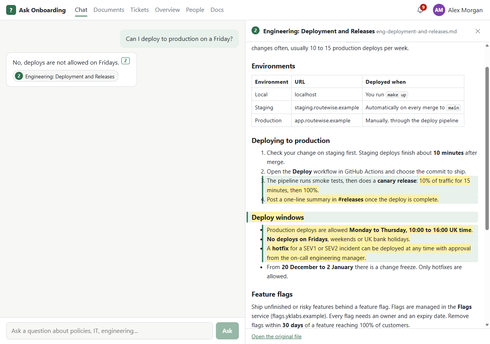
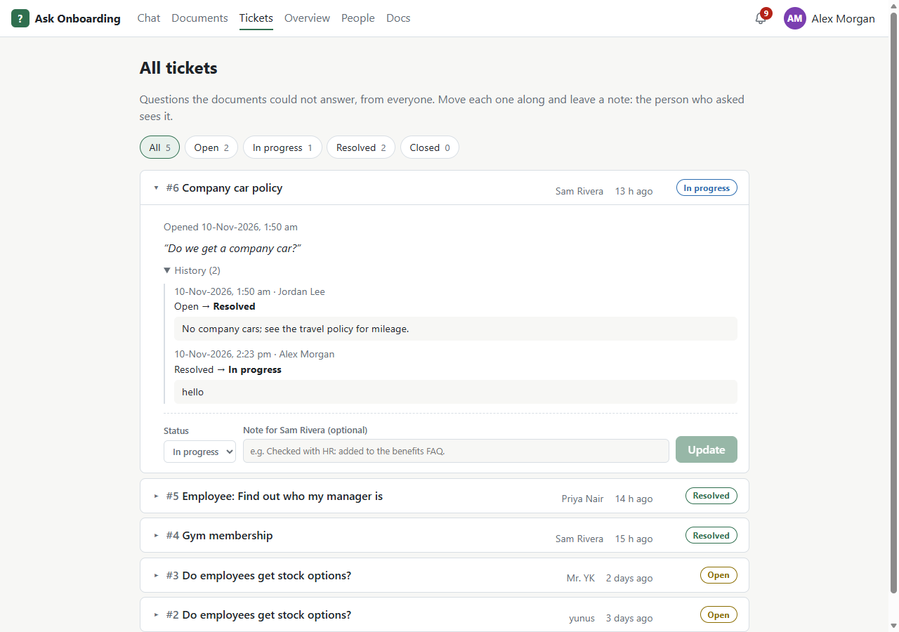
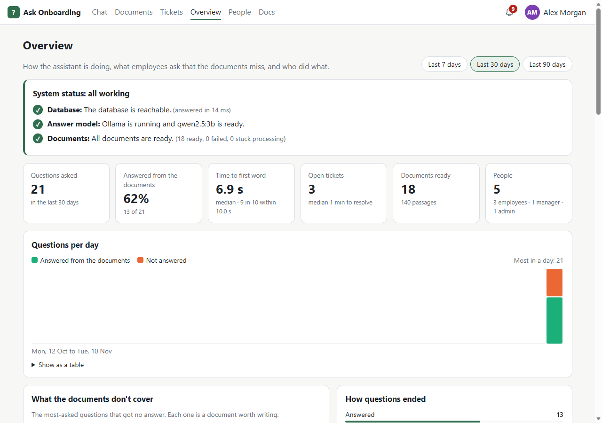
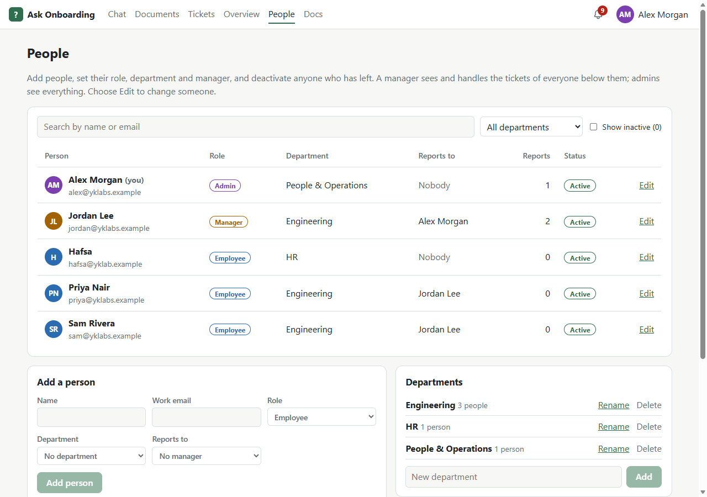

Retrieval-augmented Q&A · open source
Answers from your company's own documents, with the source one click away.
New starters ask in plain English. Ask Onboarding finds the passage that answers it and shows exactly where it came from. When the documents don't say, it says so and drafts a help-desk ticket.
The live demo is behind a site password, because sign-in there is one click. Ask the author for access, or run it yourself in one command (below).

How it works
- 1
Ask
Type a question the way you'd ask a colleague in your first week.
- 2
Find
Hybrid search, by meaning and by keyword, picks the five passages from the handbook and wiki most likely to hold the answer.
- 3
Cite
The answer names its sources. Click one to open the document, formatted, with the exact passage marked.
Honest by design
A guess that sounds confident is worse than “I don't know”. Measured on 20 held-out questions:
- 94%of answerable questions answered correctly
- 4 of 4out-of-scope questions honestly refused
- 0false “I don't know” answers
- No API keythe model runs on the server; documents never leave it
A quick tour



Who can do what
Employee
- Ask questions and get cited answers
- Open tickets for anything the documents miss
- Follow their own tickets
Manager
- Everything an employee can do
- See their team's tickets and reply
- Browse the document library
Admin
- Every ticket, from everyone
- Upload, replace and delete documents
- Manage people, roles and departments
- The overview, the audit log and system alerts
Read more
Run it yourself
Needs Docker. The first start downloads the local model (about 2 GB); after that it starts in seconds.
git clone https://github.com/yunuskalam-ai/ask-onboarding.git
cd ask-onboarding
docker compose up -dThen open http://localhost:8080 and sign in as any of the demo people.